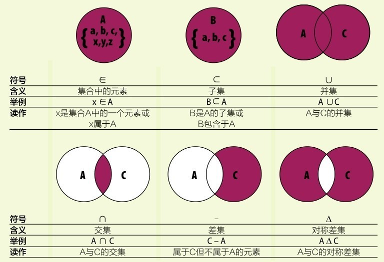
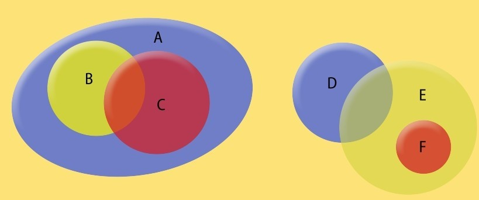
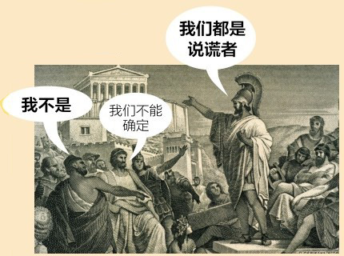
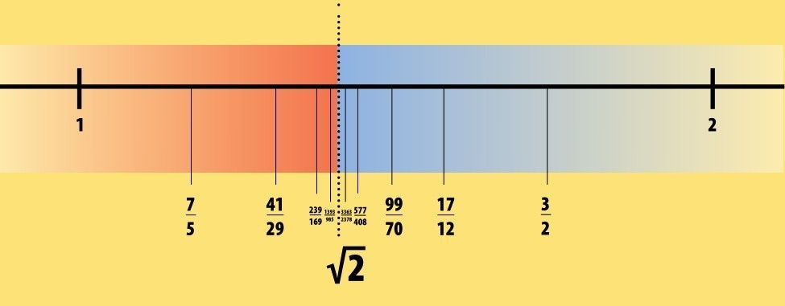
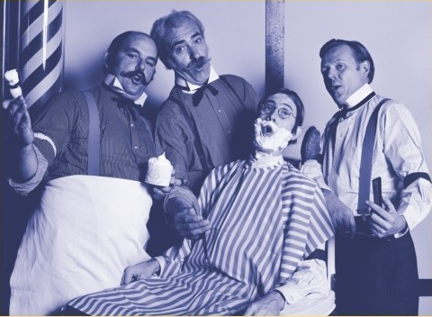
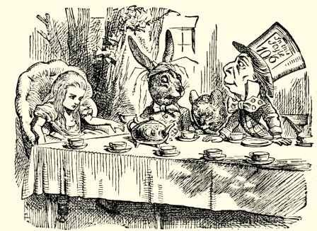
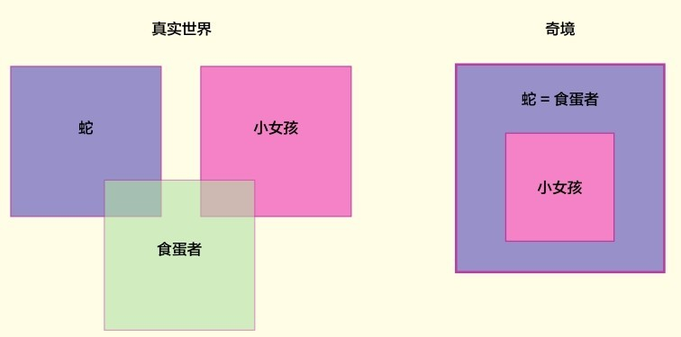
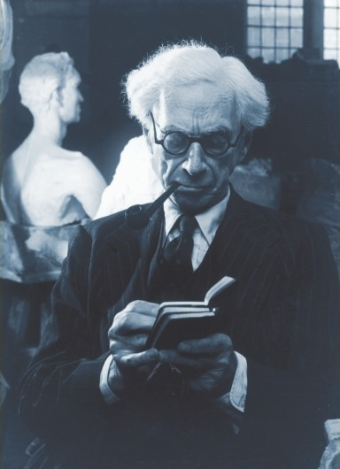
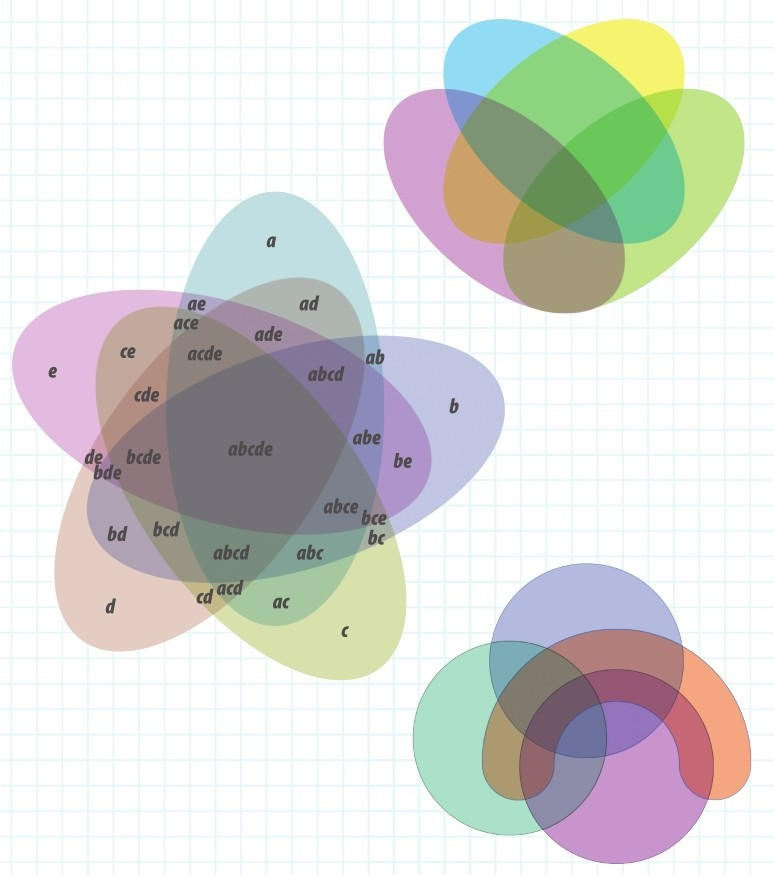

把现实世界中的事物或数据按类分成不同的集合，是一种简化问题、便于相互比较分析的手段。然而，这种看似简单的操作在20世纪之初让数学陷入了一场危机。最终，集合论的严格化和完善化才化解了这场危机。
数学上，一袋水果可以和无穷数集一样被看作是一个集合。也许听起来怪异，但数学上我们只关心事物的数量性质，并不关心具体的事物是什么。于是，几乎任何事物我们都可以拿来构成一个集合，直到19世纪末，这种随意性引发了数学史上的一场危机。
图中的所有水果可以构成一个集合，根据品种的不同，还可以分出几个子集合：葡萄集合、红苹果集合和梨集合等。集合论中，一个梨和一个数是无须区别对待的。
规则破坏者
这次危机源于超越数的发现（见第148页）。如π和e这些为我们熟知的数都是超越数，它们的性质在当时并不为数学家们所理解。超越数不能由其他非超越数通过有限次四则运算得到，它们是实数集合中特殊的存在。而格奥尔格·康托尔关于无穷大的工作让人们意识到其实绝大多数实数是超越数，而人们之前认识的非超越数却只占少数。超越数和其他无理数填充满整数和分数之间的空隙，使得数轴成为一条连续的有向直线，数轴上再无空隙。人们起初以为每两个数之间都是可以相互表示的，直到发现超越数，规则被打破。大概50年后，数学家们针对集合概念揭示了一些逻辑悖论，并提出完善和修正方案。完善之后的体系最终引发了计算机革命，进而改变了整个世界。
集合运算符号
集合论中有一些特殊的运算符号。下面简要介绍部分集合运算符号的含义及使用范例。

朴素集合论
集合论在此之前其实早就存在，但此后将面临深层次的修正。早期的集合论称为朴素集合论，它已足以处理生活中的一些简单运用：处理有限集，或微调后处理一些无穷集问题。
集合的元素
一个集合就像一个容器，可以“装下”任何事物，比如刚刚从商场购得的物品。集合中包含的每一项称为元素，用一对花括号包住所有元素构成一个集合，这对花括号有时也称为集合括号。由此，可以得到一个集合：物品集合={巧克力，苹果，葡萄，芝士，面包}。每个集合都有基数，即集合中所含元素的个数，如上面物品集合的基数为5。集合中的部分元素可以构成一个新的集合，即原集合的子集。于是，上述物品集合可以写成{巧克力，{水果}，芝士，面包}，其中水果集合={苹果，葡萄}。这样调整后的物品集合基数为4，因为此时视{水果}为一个元素，虽然水果集合本身含有两个元素。

集合间的包含关系以及交并差等运算在韦氏图中清晰呈现。韦氏图由英国数学家约翰·韦恩发明。
集合之间的比较
集合论的一个研究目的是简化元素比较的过程，无须再顾虑元素究竟代表的是什么具体事物。设想有另一个集合：购物清单集合={芝士、苏打、橘子、葡萄、鸡肉、面包}。物品集合与上述购物清单集合可以做交集，即把两个集合中公共的元素拿出来构造一个新的集合：购物清单集合∩物品集合={芝士、葡萄、面包}。由交集可见，这趟购物不算顺利。因为购物清单集合基数为6，而交集的基数为3，说明只购得清单中的3件物品。
集合运算
通过在物品集合中，关于上面的交集取余，就可以知道哪些已购买的物品是之前清单上没有列入计划的。这个过程等价于用物品集合减去购物清单集合得到的差集：物品集合-购物清单集合={巧克力，苹果}。所以，这趟购物也不算太失败。购物者明显临时起意，用巧克力和苹果替换下起初欲购买的橘子。我们也可以用并集运算表达出两个集合中的所有元素：购物清单集合∪物品集合={芝士、苏打、橘子、葡萄、鸡肉、面包、巧克力、苹果}。通过对称差集运算，我们也可以表达出购物清单上罗列了却未买的物品，以及事先没有计划但最终买了的替代品：购物清单集合∆物品集合={苏打、橘子、苹果、鸡肉、巧克力}。
全集
朴素集合论中有一个概念叫全集，通常记作U。顾名思义，全集包括问题涉及的所有元素。如上面的购物问题中，我们可以把杂货店中所有待售物品作为元素构造全集。数学上，全集可以包含任何考查的对象，包括它自己本身。这种一个集合可以以自身为元素的设定导致了数学史上最有趣悖论之一的产生。而现在，我们应该明了集合论是如何完善化以弥补这个漏洞的。
无限集
一个集合不光可以含有有限个元素，如上面的物品集合与购物清单集合，也可以含有无限多的元素。格奥尔格·康托尔关于无限集的工作表明，同样都为无限集的两个集合，其元素填充的方式可能不同。自然数集是一个无限集，我们可以一个一个有序地罗列出它包含的每一个元素：{0， 1，2，3，4，5，…}。集合括号中的省略号使得我们无须去穷尽所有的自然数，而是“按之前的规则依序排列下去”。
说谎者悖论

悖论是一种表面上同时隐含着两个对立结论的命题或推理，而这两个结论都能自圆其说。最有名的悖论之一是说谎者悖论，它来源于公元前6世纪的哲学家古希腊的克里特人埃庇米尼得斯说的一句话：“所有克里特人都是说谎者。”因为他自己就是克里特人，所以，我们只能认为他自己也是一个说谎者，因此，不是所有克里特人都说谎。如果埃庇米尼得斯正是说实话的人之一，那么，所有克里特人都该是说谎者，包括他自己，如他的话陈述的，这样，这些推理就进入了一个无休止的死循环。这句话是一个悖论，因其是自我指涉的，一个克里特人谈所有克里特人，在说到自己时否定了自己，它的断言总是与自身矛盾。这些悖论听起来如有趣的谜题，但是当这些自我指涉的推理运用于数学上时，整个数学体系的准确与合理性受到了质疑。

戴德金分割技术用于对实数轴在一点进行划分。划分后，当左侧的有理数没有最大值，右侧的有理数也没有最小值时，分割点为无理数，以此方式定义如√2这些无理数。
划分实数集
与自然数集合同基数的可列集还有很多，同时，也存在不可列无穷集，如实数集合。实数是不能被一个一个罗列清楚的，相反，它们形成一条无任何缝隙的连续直线。那么如何才能确定一个数是实数呢？换言之，每个实数究竟在数轴上的哪个位置？19世纪80年代，德国数学家理查德·戴德金解决了这个难题。他验证了数轴上的数或为（可定义的）有理数或为无理数，而无理数的两侧被有理数包围。通过一系列冗长的计算，戴德金发现有理数稠密地散布于数轴之上，仅有的小缝隙恰好为不易定义的无理数所填满。
理发师悖论
大约20年后，威尔士数学家伯特兰·罗素提出了著名的理发师悖论：在一个小镇里有一家理发店，里面的理发师必须遵循一个规则，即理发师只给不给自己理发的人理发。于是，罗素问道：谁为这位理发师理发呢？如果他给自己理发，则他背弃了自己的原则，他为给自己理发的人理发了；但如果他不给自己理发，那么他需要别人给他理发，此时按规则，他就该给自己理发，所以，他还是没有遵从规则。罗素利用这个悖论说明集合论是自我指涉的。也就是说，它用自身作为元素定义自己，进而引发出自我否定的结论。人们对数的研究是建立在集合论之上的，因此，如果集合论被质疑，整个数学王国将彻底倾塌。

这些理发师状似陶然自得，并未被罗素悖论所扰（1901年）。
仙境中的集合
《爱丽丝漫游奇境记》是英国作家刘易斯·卡罗尔在19世纪六七十年代所著的童话故事。卡罗尔的原名叫查尔斯·道奇森，也是一位数学家。整个故事充斥着数学思想，如爱丽丝行走的道路可以作只改变尺寸不改变形状的相似变换。爱丽丝遇见鸽子那段故事可以用集合论来诠释。鸽子指责爱丽丝是一条蛇，想吃她的蛋。鸽子从来没有见过小女孩，它认为它树上所有的东西都是蛇。两者讨论了蛇、食蛋动物和小女孩的特征。爱丽丝坚持说一些蛇会吃蛋，一些小女孩也会吃蛋，但是，没有哪个小女孩会是蛇，它们是不同的两个集合类。鸽子表示不同意，它们认为所有的蛇和食蛋者都是一类的，小女孩作为食蛋者是蛇集合中的一个子集。

迪士尼版的《爱丽丝漫游奇境记》中，三月兔向疯帽匠讨要半杯茶，结果疯帽匠居然把茶杯一分为二后递给三月兔。

伯特兰·罗素
伯特兰·罗素是一位哲学家、和平主义社会活动家及数学家，是20世纪英国最伟大的智者（他卒于1970年，享年98岁）。罗素的一个重要观点是人们都过于辛劳。他反对社会提倡人们辛勤工作。他认为过分操劳于工作并不好，因为这剥夺了人们享受快乐的时光。

更诡异的发现
1903年，罗素和他的英国同事诺夫·怀海德为集合论立了一系列新规，以保证再无漏洞。这项工作是一件大工程，仅证明“1+1=2”就写了700页！两人欲使数学完备化，进而再无法推出矛盾的结论。但是，1931年，德国数学家库尔特·哥德尔得到了更惊人的发现。他的“不完备性定理”说明，没有一种公理体系可以导出数论中所有的真实命题，除非它是不完备的，此时，体系内必仍有命题无法被证明，进而自身引出悖论，就如说谎者悖论（见第163页方框）。一些聪慧的数学家理解哥德尔的想法，认为他颠覆了整个数学王国！他的理论使数学基础研究发生了划时代的变化，更是现代逻辑史上很重要的一座里程碑。之后，天才的艾伦·图灵提出一个设想：能否发明一台万能机器，通过某种一般的机械步骤，能在原则上一个接一个地解决所有数学问题。最终这个设想没有实现，但是，成就了数字计算机的诞生（见第121页）。
参见：
▶数字的发明，第10页
▶计算器，第114页
原理
展示集合之间运算的韦氏图可以设计得很优美。在下面的3个彩色韦氏图中，读者能数清楚各个交集吗？我们在左下方的韦氏图中标注出了所有集合与交集，以供读者参阅。
